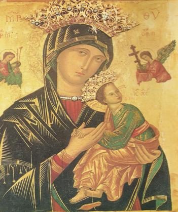

HISTORIA DE LA DEVOCIÓN A NUESTRA SEÑORA DEL PERPETUO SOCORRO PATRONA DE FRESNO

Icono oriental antiguo de origen desconocido
Fiesta: 27 de junio.
Patrona de los Padres Redentoristas y de Haití.
El icono oriental está en el altar mayor de la Iglesia de San Alfonso, muy cerca de la Basílica de Santa María la Mayor en Roma.
El icono de la Virgen, pintado sobre madera, de 21 por 17 pulgadas, muestra a la Madre con el Niño Jesús. El Niño observa a dos ángeles que le muestran los instrumentos de su futura pasión. Se agarra fuerte con las dos manos de su Madre Santísima quien lo sostiene en sus brazos. El cuadro nos recuerda la maternidad divina de la Virgen y su cuidado por Jesús desde su concepción hasta su muerte.
Hoy la Virgen cuida de todos sus hijos que a ella acuden con plena confianza.
Inicio
Historia
En el siglo XV un comerciante acaudalado de la isla de Creta (en el mar Mediterráneo) tenía la bella pintura de Nuestra Señora del Perpetuo Socorro. Era un hombre piadoso y devoto de la Virgen María. Cómo habrá llegado a sus manos dicha pintura, no se sabe. ¿Se le habría confiado por razones de seguridad, para protegerla de los sarracenos? Lo cierto es que el mercader estaba resuelto a impedir que el cuadro de la Virgen se destruyera como otros que ya habían corrido con esa suerte.
Por protección, el mercader decidió llevar la pintura a Italia. Empacó sus pertenencias, arregló sus negocios y abordo un navío dirigiéndose a Roma. En ruta se desató una violenta tormenta y todos a bordo esperaban lo peor. El comerciante tomó el cuadro de Nuestra Señora, lo sostuvo en lo alto, y pidió socorro. La Santísima Virgen respondió a su oración con un milagro. El mar se calmó y la embarcación llegó a salvo al puerto de Roma.
Inicio
Cae la pintura en manos de una familia
Tenía el mercader un amigo muy querido en la ciudad de Roma así que decidió pasar un rato con él antes de seguir adelante. Con gran alegría le mostró el cuadro y le dijo que algún día el mundo entero le rendiría homenaje a Nuestra Señora del Perpetuo Socorro.
Pasado un tiempo, el mercader se enfermó de gravedad. Al sentir que sus días estaban contados, llamó a su amigo a su lecho y le rogó que le prometiera que, después de su muerte, colocaría la pintura de la Virgen en una Iglesia digna o ilustre para que fuera venerada públicamente. El amigo accedió a la promesa pero no la llegó a cumplir por complacer a su esposa que se había encariñado con la imagen.
Pero la Divina Providencia no había llevado la pintura a Roma para que fuese propiedad de una familia sino para que fuera venerado por todo el mundo, tal y como había profetizado el marcador. Nuestra Señora se le apareció al hombre en tres ocasiones, diciéndole que debía poner la pintura en una Iglesia, de lo contrario, algo terrible sucedería. El hombre discutió con su esposa para poder cumplir con la Virgen, pero ella se le burló, diciéndole que era un visionario. El hombre temió disgustar a su esposa, por lo que las cosas quedaron igual. Nuestra Señora por fin, se le volvió a aparecer diciéndole que, para que su pintura saliera de esa casa, él tendría que irse primero. De repente el hombre se puso gravemente enfermo y en pocos días murió. La esposa estaba muy apegada a la pintura y trató de convencerse a sí misma de que estaría más protegida en su propia casa. Así, día a día, fue aplazando el deshacerse de la imagen. Un día su hijita de seis años vino hacia ella apresurada con la noticia que una hermosa y resplandeciente Señora se le había aparecido mientras estaba mirando la pintura. La Señora le había dicho que les dijera a su madre y a su abuelo que Nuestra Señora del Perpetuo Socorro deseaba ser puesta en una Iglesia; y, que si no, todos los de casa morirían.
La mamá de la niñita estaba espantada y prometió obedecer a la Señora. Una amiga, que vivía cerca, oyó lo de la aparición. Fue entonces a ver a la señora y ridiculizó todo lo ocurrido. Trató de persuadir a su amiga de que se quedara con el cuadro, diciéndole que si fuera ella, no haría caso de sueños y visiones. Apenas había terminado de hablar, cuando comenzó a sentir unos dolores tan terribles, que creyó que se iba a morir. Llena de dolor, comenzó a invocar a Nuestra Señora para que la perdonara y la ayudara. La Virgen escuchó su oración. La vecina toco la pintura, con corazón contrito, y fue sanada instantáneamente. Entonces procedió a suplicarle a la viuda para que obedeciera a Nuestra Señora de una vez por todas.
Inicio
Accede la viuda a entregar la pintura
Se encontraba la viuda preguntándose en que Iglesia
debería poner la pintura, cuando el cielo mismo le
respondió. Volvió a aparecérsele la Virgen a la
niña y de dijo que le dijera a su madre que quería que la
pintura fuera colocada en la Iglesia que quedaba entre la
basílica de Santa María la Mayor y la de San Juan de
Letrán. Esa Iglesia era la de San Mateo, el Apóstol.
La señora se apresuró a entrevistarse con el superior de
los Agustinos quienes eran los encargados de la Iglesia. Ella le
informó acerca de todas las circunstancias relacionadas con el
cuadro. La pintura fue llevada a la Iglesia en procesión solemne
el 27 de marzo de 1499. En el camino de la residencia de la viuda hacia
la Iglesia, un hombre tocó la pintura y le fue devuelto el uso
de un brazo que tenía paralizado. Colgaron la pintura sobre el
altar mayor de la Iglesia, en donde permaneció casi trescientos
años. Amado y venerado por todos los de Roma como una pintura
verdaderamente milagrosa, sirvió como medio de incontables
milagros, curaciones y gracias.
En 1798, Napoleón y su ejército francés tomaron la
ciudad de Roma. Sus atropellos fueron incontables y su soberbia,
satánica. Exilió al Papa Pío VII y, con el
pretexto de fortalecer las defensas de Roma, destruyó treinta
Iglesias, entre ellas la de San Mateo, la cual quedó
completamente arrasada. Junto con la Iglesia, se perdieron muchas
reliquias y estatuas venerables. Uno de los Padres Agustinos, justo a
tiempo, habían logrado llevarse secretamente el cuadro.
Cuando el Papa, que había sido prisionero de Napoleón,
regresó a Roma, le dio a los agustinianos el monasterio de San
Eusebio y después la casa y la Iglesia de Santa María en
Posterula. Una pintura famosa de Nuestra Señora de la Gracia
estaba ya colocada en dicha Iglesia por lo que la pintura milagrosa de
Nuestra Señora del Perpetuo Socorro fue puesta en la capilla
privada de los Padres Agustinianos, en Posterula. Allí
permaneció sesenta y cuatro años, casi olvidada.
Inicio
Hallazgo de un sacerdote Redentorista
Mientras tanto, a instancias del Papa, el Superior General de los Redentoristas, estableció su cede principal en Roma donde construyeron un monasterio y la Iglesia de San Alfonso. Uno de los Padres, el historiador de la casa, realizó un estudio acerca del sector de Roma en que vivían. En sus investigaciones, se encontró con múltiples referencias a la vieja Iglesia de San Mateo y a la pintura milagrosa de Nuestra Señora del Perpetuo Socorro.
Un día decidió contarle a sus hermanos sacerdotes sobre sus investigaciones: La Iglesia actual de San Alfonso estaba construida sobre las ruinas de la de San Mateo en la que, durante siglos, había sido venerada, públicamente, una pintura milagrosa de Nuestra Señora del Perpetuo Socorro. Entre los que escuchaban, se encontraba el Padre Michael Marchi, el cual se acordaba de haber servido muchas veces en la Misa de la capilla de los Agustinianos de Posterula cuando era niño. Ahí en la capilla, había visto la pintura milagrosa. Un viejo hermano lego que había vivido en San Mateo, y a quién había visitado a menudo, le había contado muchas veces relatos hacer de los milagros de Nuestra Señora y solía añadir: “Ten presente, Michael, que Nuestra Señora de San Mateo es la de la capilla privada. No lo olvides”. El padre Michael les relato todo lo que había oído del hermano lego. Por medio de este incidente los Redentoristas supieron de la existencia de la pintura, no obstante, ignoraban su historia y el deseo expreso de la Virgen de ser honrada públicamente en la Iglesia.
Ese mismo año, a través del sermón inspirado de un jesuita de la antigua pintura de Nuestra Señora del Perpetuo Socorro, conocieron los redentoristas la historia de la pintura y el deseo de la Virgen de que esta imagen suya fuera venerada entre la Iglesia de Santa María la Mayor y la de San Juan de Letrán. El santo Jesuita había lamentado el hecho que el cuadro, que había sido tan famoso por milagros y curaciones, hubiera desaparecido sin revelar ninguna señal sobrenatural durante los últimos sesenta años. A él le pareció que se debía a que ya no estaba expuesto públicamente para ser venerado por los fieles. Les imploró a sus oyentes que, si alguno sabía donde se hallaba la pintura, le informaran dueño lo que deseaba la Virgen.
Los Padres Redentoristas soñaban con ver que el milagroso cuadro fuera nuevamente expuesto a la veneración pública y que, de ser posible, sucediera en su propia Iglesia de San Alfonso. Así que instaron a su Superior General para que tratara de conseguir el famoso cuadro para su Iglesia. Después de un tiempo de reflexión, decidió solicitarle la pintura al Santo Padre, el Papa Pío IX. Le narró la historia de la milagrosa imagen y sometió su petición.
El Santo Padre escuchó con atención. Él amaba dulcemente a la Santísima Virgen y le alegraba que fuera honrada. Sacó su pluma y escribió su deseo de que el cuadro milagroso de Nuestra Señora del Perpetuo Socorro fuera devuelto a la Iglesia entre Santa María la Mayor y San Juan de Letrán. También encargó a los Redentoristas de que hicieran que Nuestra Señora del Perpetuo Socorro fuera conocida en todas partes.
Aparece y se venera, por fin, el cuadro de Nuestra Señora. Ninguno de los Agustinos de ese tiempo había conocido la Iglesia de San Mateo. Una vez que supieron la historia y el deseo del Santo Padre, gustosos complacieron a Nuestra Señora. Habían sido sus custodios y ahora se la devolverían al mundo bajo la tutela de otros custodios. Todo había sido planeado por la Divina Providencia en una forma verdaderamente extraordinaria. A petición del Santo Padre, los Redentoristas obsequiaron a los Agustinos una linda pintura que serviría para reemplazar a la milagrosa.
La imagen de Nuestra Señora del Perpetuo Socorro fue llevado en procesión solemne a lo largo de las vistosas y alegres calles de Roma antes de ser colocado sobre le altar, construido especialmente para su veneración en la Iglesia de San Alfonso. La dicha del pueblo romano era evidente. El entusiasmo de las veinte mil personas que se agolparon en las calles llenas de flores para la procesión dio testimonio de la profunda devoción hacia la madre de Dios.
A toda hora del día, se podía ver un número de personas de toda clase delante la pintura, implorándole a Nuestra Señora del Perpetuo Socorro que escuchara sus oraciones y que les alcanzara la misericordia. Se reportaron diariamente muchos milagros y gracias.
Hoy en día, la devoción a Nuestra Señora del Perpetuo Socorro se ha difundido por todo el mundo. Se han construído Iglesias y santuarios en su honor, y se han establecido archicofradías. Su retrato es conocido y amado por todas partes.
Inicio
Signos de la imagen de Nuestra Señora del Perpetuo Socorro
(Conocida en el Oriente bizantino como el icono de la Madre de Dios de las Pasión)
Aunque su origen es incierto, se estima que el retrato fue pintado durante el decimotercero o decimocuarto siglo. El icono parece ser copia de una famosa pintura de Nuestra Señora que fuera, según la tradición, pintada por el mismo San Lucas. La original se veneraba en Constantinopla por siglos como una pintura milagrosa pero fue destruida en 1453 por los Turcos cuando capturaron la ciudad. Fue pintado en un estilo plano característico de iconos y tiene una calidad primitiva. Todas las letras son griegas. Las iniciales al lado de la corona de la Madre la identifican como la “Madre de Dios”. Las iniciales al lado del Niño “ICXC” significan “Jesucristo”. Las letras griegas en la aureola del Niño: owu significan “El que es”, mientras las tres estrellas sobre la cabeza y los hombros de María Santísima indican su virginidad antes del parto, en el parto y del después del parto.
Las letras más pequeñas identifican al ángel a la izquierda como “San Miguel Arcángel”; el arcángel sostiene la lanza y la caña con la esponja empapada de vinagre, instrumentos de la pasión de Cristo. El ángel a la derecha es identificado como “San Gabriel Arcángel”, sostiene la cruz y los clavos. Nótese que los ángeles no tocan los instrumentos de la pasión con las manos, sino con el paño que los cubre.
Cuando este retrato fue pintado, no era común pintar aureolas. Por esta razón el artista redondeó la cabeza y el velo de la Madre para indicar su santidad. Los halos y coronas doradas fueron añadidas mucho después. El fondo dorado, símbolo de la luz eterna da realce a los colores más bien vivos de las vestiduras. Para la Virgen el maforion (velo-manto), signo de la divinidad a la que ella se ha unido excepcionalmente, mientras que el traje es azul, indicación de su humanidad. En este retrato la Madona está fuera de proporción con el tamaño de su Hijo porque es – María – a quién el artista quiso enfatizar.
Los encantos del retrato son muchos, desde la ingenuidad del artista, quien quiso asegurarse que la identidad de cada uno de los sujetos se conociera, hasta la sandalia que cuelga del pie del Niño. El Niño divino, siempre con esa expresión de madurez que conviene a un Dios eterno en su pequeño rostro, está vestido como solían hacerlo en la antigüedad los nobles y filósofos: túnica ceñida por un cinturón y manto echado al hombro. El pequeño Jesús tiene en el rostro una expresión de temor y con las dos manitas aprieta la derecha de su Madre, que mira ante sí con actitud recogida y pensativa, como si estuviera recordando en su corazón la dolorosa profecía que le hiciera Simeón, el misterioso plan de la redención, cuyo siervo sufriente ya había presentado Isaías.
En su doble denominación, esta bella imagen de la Virgen nos recuerda el centralismo salvífico de la Pasión de Cristo y de María y al mismo tiempo la socorredora bondad de la Madre de Dios y nuestra.